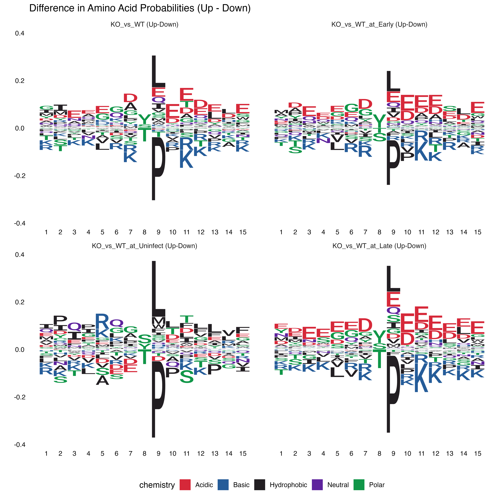

PTM Analysis - Sequence Logo
DPA Analysis
FGCZ
17 February, 2026
Source:vignettes/Analysis_seqlogo.Rmd
Analysis_seqlogo.RmdIntroduction
This document performs sequence logo analysis on significantly regulated sites from DPA analysis. Sequence motifs help identify active kinases driving PTM changes.
desc <- switch(params$sheet,
"DPA" = "**DPA (Differential PTM Abundance)**: Raw PTM signal changes. Sequence motifs may reflect both abundance and stoichiometry effects.",
"DPU" = "**DPU (Differential PTM Usage)**: Protein-normalized changes. Sequence motifs reflect genuine kinase activity changes.",
"CF" = "**CF (CorrectFirst)**: Alternative normalization. Sequence motifs reflect activity changes with different correction approach."
)
cat(desc)DPA (Differential PTM Abundance): Raw PTM signal changes. Sequence motifs may reflect both abundance and stoichiometry effects.
Data Loading
if (pipeline_mode) {
message("Loading data from: ", params$xlsx_file, " (sheet: ", params$sheet, ")")
data <- readxl::read_xlsx(params$xlsx_file, sheet = params$sheet)
} else {
# Vignette mode: use example data
data("combined_test_diff_example", package = "prophosqua")
data <- combined_test_diff_example
message("Using example data from prophosqua package")
}
data_info <- tibble(
Property = c("Mode", "Sheet", "Rows", "Contrasts"),
Value = c(
if (pipeline_mode) basename(params$xlsx_file) else "Example data",
params$sheet,
nrow(data), paste(unique(data$contrast), collapse = ", ")
)
)
knitr::kable(data_info, caption = "Data Summary")| Property | Value |
|---|---|
| Mode | Example data |
| Sheet | DPA |
| Rows | 105824 |
| Contrasts | KO_vs_WT, KO_vs_WT_at_Early, KO_vs_WT_at_Late, KO_vs_WT_at_Uninfect |
Filter Significant Sites
Filter sites with |log2FC| > 0.6 and FDR < 0.05.
# Use shared filtering function with sequence validation
significant_sites <- data |>
dplyr::filter(!is.na(posInProtein)) |>
filter_significant_sites(
fdr_threshold = params$fdr,
fc_threshold = params$fc,
require_sequence = TRUE
)
cat("Found", nrow(significant_sites), "significant sites\n")## Found 7410 significant sitesCount Significant Sites
stopifnot("No significant sites found. Adjust fdr/log2fc thresholds in config." = nrow(significant_sites) > 0)
tx <- as.data.frame(with(significant_sites, table(contrast, regulation, modAA)))
capt <- paste0("Number of significantly regulated sites by contrast, residue, and regulation direction (", params$sheet, ").")
knitr::kable(tx, caption = capt)| contrast | regulation | modAA | Freq |
|---|---|---|---|
| KO_vs_WT | downregulated | S | 807 |
| KO_vs_WT_at_Early | downregulated | S | 785 |
| KO_vs_WT_at_Late | downregulated | S | 797 |
| KO_vs_WT_at_Uninfect | downregulated | S | 484 |
| KO_vs_WT | upregulated | S | 814 |
| KO_vs_WT_at_Early | upregulated | S | 812 |
| KO_vs_WT_at_Late | upregulated | S | 889 |
| KO_vs_WT_at_Uninfect | upregulated | S | 433 |
| KO_vs_WT | downregulated | T | 217 |
| KO_vs_WT_at_Early | downregulated | T | 177 |
| KO_vs_WT_at_Late | downregulated | T | 250 |
| KO_vs_WT_at_Uninfect | downregulated | T | 107 |
| KO_vs_WT | upregulated | T | 153 |
| KO_vs_WT_at_Early | upregulated | T | 170 |
| KO_vs_WT_at_Late | upregulated | T | 177 |
| KO_vs_WT_at_Uninfect | upregulated | T | 58 |
| KO_vs_WT | downregulated | Y | 12 |
| KO_vs_WT_at_Early | downregulated | Y | 17 |
| KO_vs_WT_at_Late | downregulated | Y | 13 |
| KO_vs_WT_at_Uninfect | downregulated | Y | 9 |
| KO_vs_WT | upregulated | Y | 55 |
| KO_vs_WT_at_Early | upregulated | Y | 78 |
| KO_vs_WT_at_Late | upregulated | Y | 76 |
| KO_vs_WT_at_Uninfect | upregulated | Y | 20 |
Validate Sequence Window
Ensure the central residue matches the modified amino acid.
# Use shared validation function
significant_sites <- validate_sequence_window(significant_sites)
cat("After validation:", nrow(significant_sites), "sites remain\n")## After validation: 7261 sites remainSequence Logo Analysis
Generate Sequence Logos
seq_list <- significant_sites |>
dplyr::mutate(.grp = paste(contrast, regulation, sep = "_")) |>
dplyr::group_by(.grp) |>
dplyr::summarize(
seqs = list(toupper(SequenceWindow)),
.groups = "drop"
) |>
with(setNames(seqs, .grp))
if (length(seq_list) > 0) {
ggseqlogo(
seq_list,
ncol = 2,
seq_type = "aa",
method = "probability"
)
} else {
cat("No significant sites found for sequence logo generation.\n")
}
Sequence logos for significantly regulated sites by contrast and regulation direction.
Difference Logo Analysis
Visualize the difference in amino acid enrichment between upregulated and downregulated sites.
p_diff <- prophosqua::plot_diff_logo(significant_sites)
if (!is.null(p_diff)) {
print(p_diff)
} else {
cat("No contrasts with both upregulated and downregulated sites found for difference logo.\n")
}

Difference Logos (Upregulated - Downregulated)
Results Summary
summary_info <- tibble(
Metric = c("Analysis Type", "FDR Threshold", "FC Threshold",
"Total Significant Sites", "Upregulated", "Downregulated"),
Value = c(params$sheet, params$fdr, params$fc,
nrow(significant_sites),
sum(significant_sites$regulation == "upregulated"),
sum(significant_sites$regulation == "downregulated"))
)
knitr::kable(summary_info, caption = "Analysis Summary")| Metric | Value |
|---|---|
| Analysis Type | DPA |
| FDR Threshold | 0.05 |
| FC Threshold | 0.6 |
| Total Significant Sites | 7261 |
| Upregulated | 3666 |
| Downregulated | 3595 |
Session Info
## R version 4.5.2 (2025-10-31)
## Platform: aarch64-apple-darwin20
## Running under: macOS Tahoe 26.3
##
## Matrix products: default
## BLAS: /System/Library/Frameworks/Accelerate.framework/Versions/A/Frameworks/vecLib.framework/Versions/A/libBLAS.dylib
## LAPACK: /Library/Frameworks/R.framework/Versions/4.5-arm64/Resources/lib/libRlapack.dylib; LAPACK version 3.12.1
##
## locale:
## [1] en_US.UTF-8/en_US.UTF-8/en_US.UTF-8/C/en_US.UTF-8/en_US.UTF-8
##
## time zone: Europe/Zurich
## tzcode source: internal
##
## attached base packages:
## [1] stats graphics grDevices utils datasets methods base
##
## other attached packages:
## [1] prophosqua_0.3.0 readxl_1.4.5 ggseqlogo_0.2.2 dplyr_1.2.0
##
## loaded via a namespace (and not attached):
## [1] gtable_0.3.6 jsonlite_2.0.0 compiler_4.5.2 tidyselect_1.2.1
## [5] jquerylib_0.1.4 systemfonts_1.3.1 scales_1.4.0 textshaping_1.0.4
## [9] yaml_2.3.12 fastmap_1.2.0 ggplot2_4.0.2 R6_2.6.1
## [13] labeling_0.4.3 patchwork_1.3.2 generics_0.1.4 knitr_1.51
## [17] forcats_1.0.1 htmlwidgets_1.6.4 tibble_3.3.1 bookdown_0.46
## [21] desc_1.4.3 bslib_0.9.0 pillar_1.11.1 RColorBrewer_1.1-3
## [25] rlang_1.1.7 cachem_1.1.0 xfun_0.55 S7_0.2.1
## [29] fs_1.6.6 sass_0.4.10 otel_0.2.0 cli_3.6.5
## [33] withr_3.0.2 pkgdown_2.2.0 magrittr_2.0.4 digest_0.6.39
## [37] grid_4.5.2 lifecycle_1.0.5 vctrs_0.7.1 evaluate_1.0.5
## [41] glue_1.8.0 cellranger_1.1.0 farver_2.1.2 ragg_1.5.0
## [45] purrr_1.2.1 rmarkdown_2.30 tools_4.5.2 pkgconfig_2.0.3
## [49] htmltools_0.5.9